About Me
สวัสดีครับ ผมชื่อ อธิชาติ ศรีทับทิม เป็นนักศึกษาชั้นปีที่ 1 คณะวิทยาศาสตร์และเทคโนโลยี สาขาวิชาวิทยาการคอมพิวเตอร์ มหาวิทยาลัยธรรมศาสตร์ รหัสนักศึกษา 6909650332
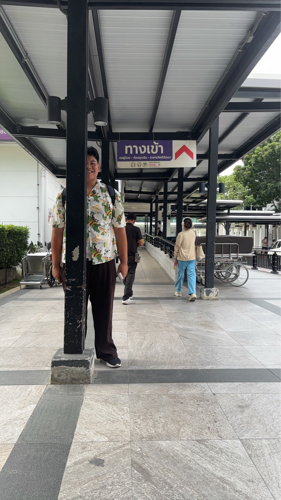
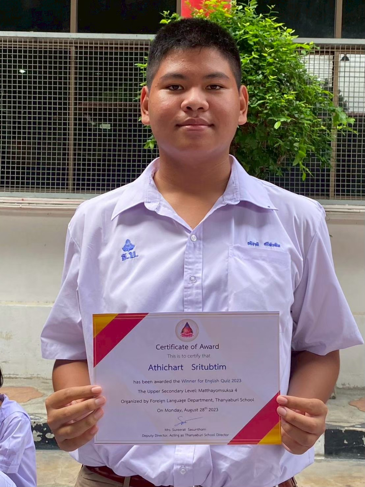
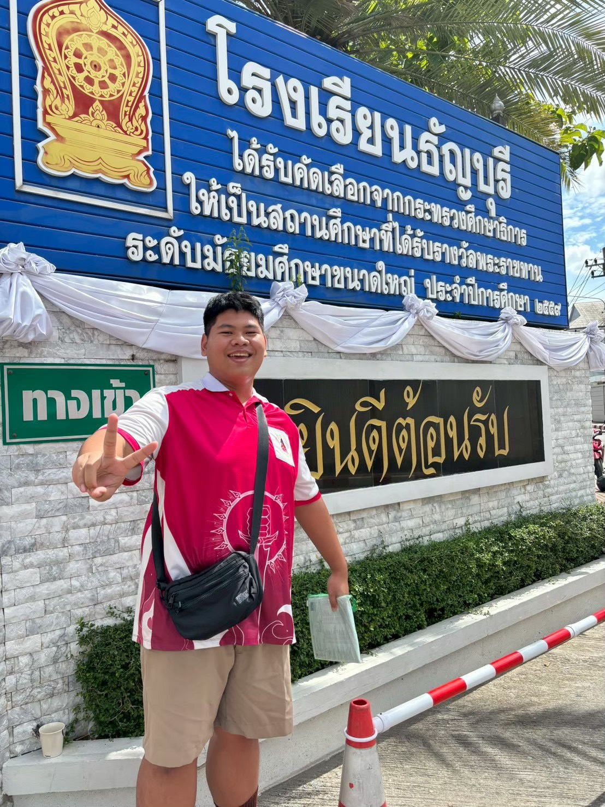
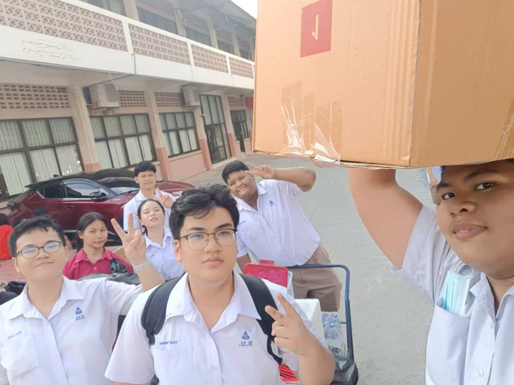
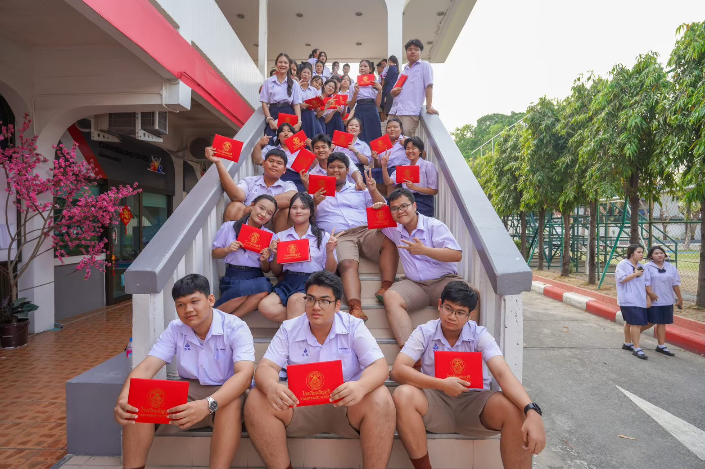
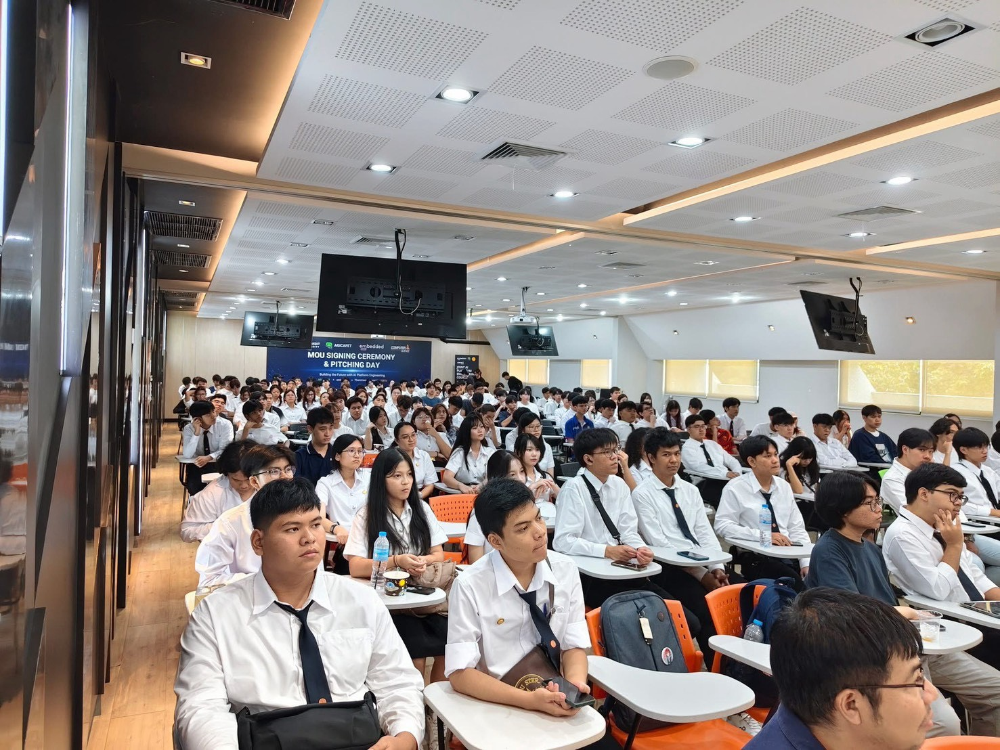
What I Built
ผมได้สร้างเว็บไซต์ที่ดูมีความเป็นตัวของตัวเอง และจัดวางรูปที่เหมาะกับงานของผม
โดยหลักๆที่อาจารย์จะเจอในงานนี้ก็คือรูปของผม ขั้นตอนการทำของผม
และปัญหาที่พบในขั้นตอนการทำของผมโดยส่วนมาก...
โดยในระหว่างที่ผมทำงานนี้ ตอนที่ผมได้กดเซฟงานของผม มันจะไปบันทึกที่ server
และตอนที่ผมกดรีเฟรชหน้าเว็บ มันไปดึงข้อมูลจาก server มาแสดงผลให้ผมเห็นใน
บราวเซอร์ของผม หรือที่เรียกว่า client
How I Built It
ผมก็เริ่มจากการเติมข้อมูลในส่วนของตัว index ให้ครบก่อน และเริ่มทำองค์ประกอบต่างๆ ในส่วนของ style โดยเครื่องมือ ที่ผมใช้เพื่อเป็น inspiration และคำแนะนำในการประกอบการ ทำเว็บไซต์ของผมคือ tiktok, youtube, และ gemini
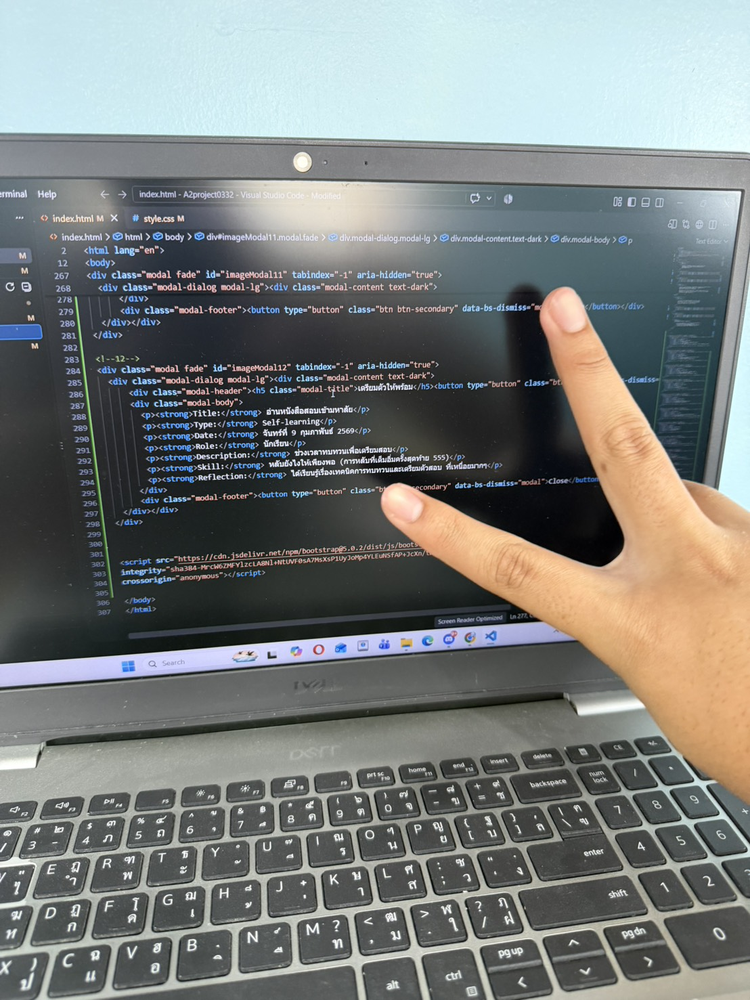

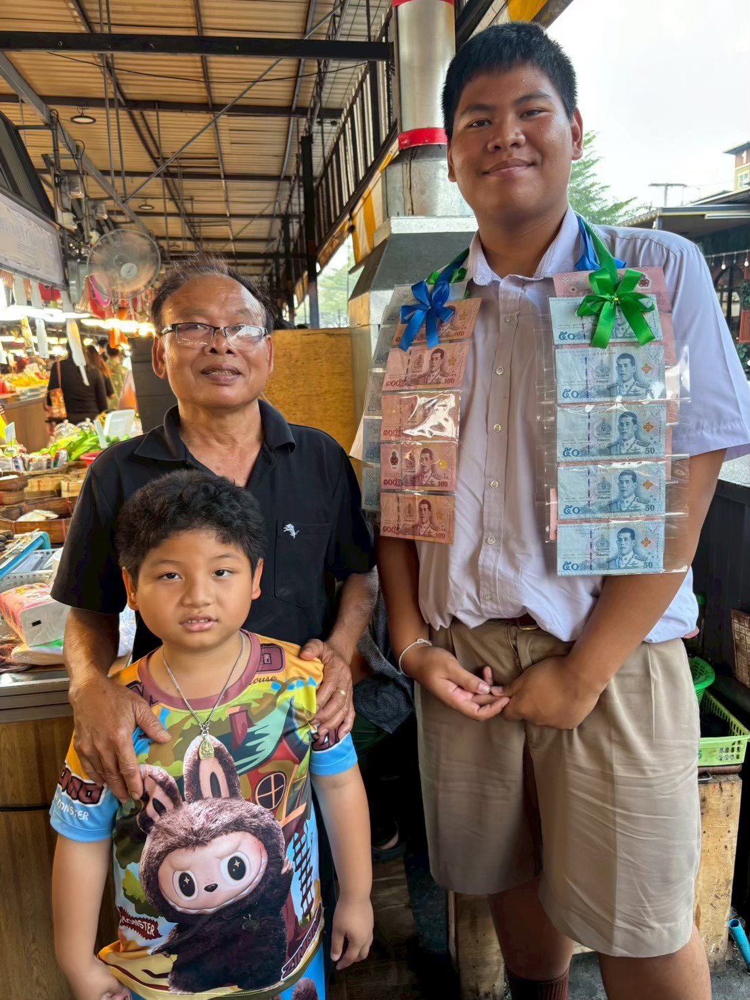
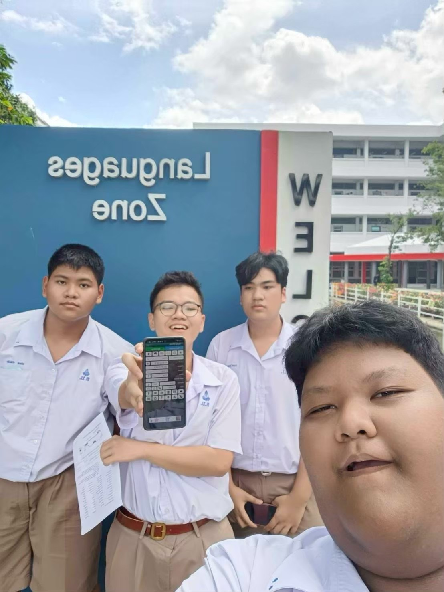
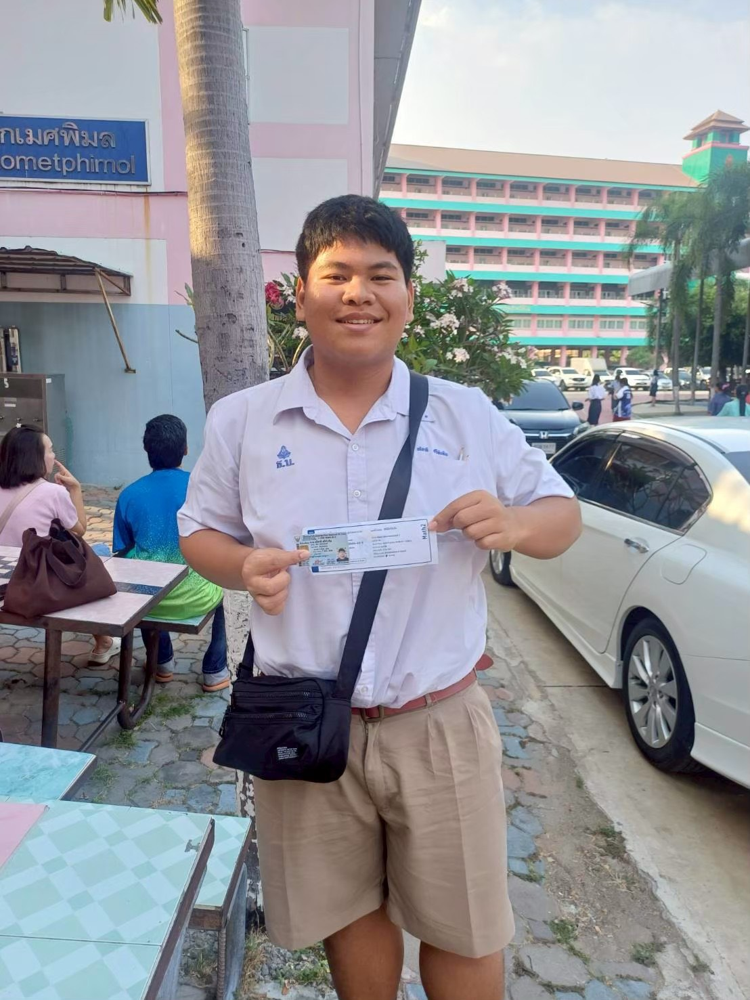
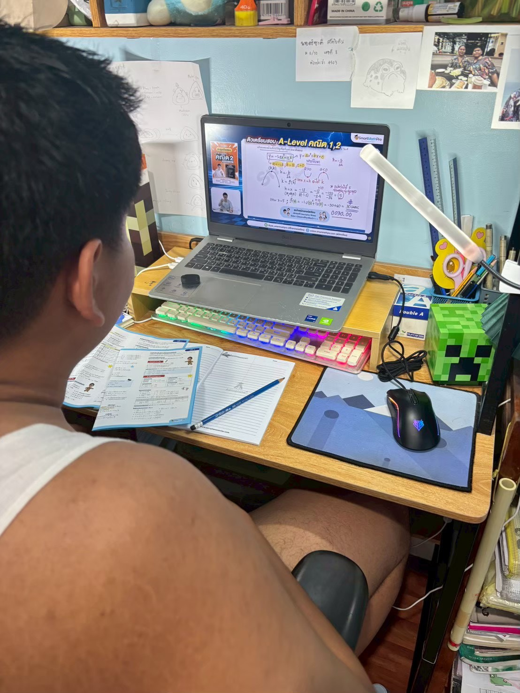
Reflection
นี่คือตัวอย่างปัญหาที่ผมพบในตอนที่ผมทำ
- หา reference หรือ inspiration ที่เหมาะกับตัวเองไม่ค่อยเจอ
- การที่พื้นฐานไม่ค่อยแม่น เขียนโค้ดไม่ค่อยเป็น ทำให้ไม่รู้ shortcutsหรืออะไรหลายๆอย่างที่ช่วยประหยัดเวลา
- เสียเวลาในการลองผิดลองถูกไปนาน จนกว่าจะหาแบบที่ใช่